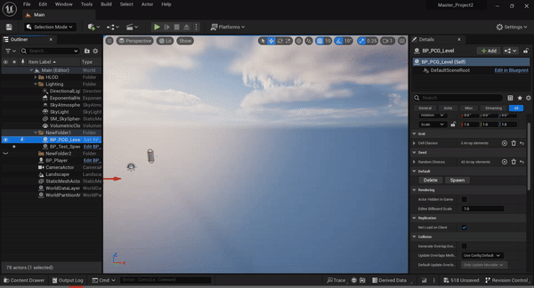
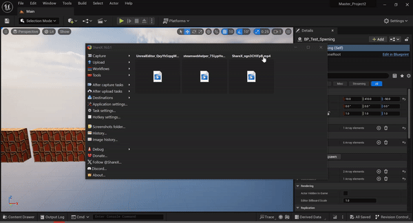

Masters Project 2

Procedural generation can be used to generate a variety of game content like levels, quests and game entities within a game level. The aim of this project is to explore literature and develop a system that will procedurally generate the placement of enemies and collectables with a 2D level. Procedural content generation has been used for a variety of games to create content and to allow for unique experiences for the player. One of the main goals of producing game levels is making the experience meaningful for the player, meaning full play comes from the way the player interacts with the game to play it and one of the main ways a game will interact with the player is with game engines like enemies and collectables. Most games that use a procedural approach to generating their levels, will also have a procedural system that will spawn in entities within the level. The main ways this would be done is to spawn entities as part of the level generation process.
